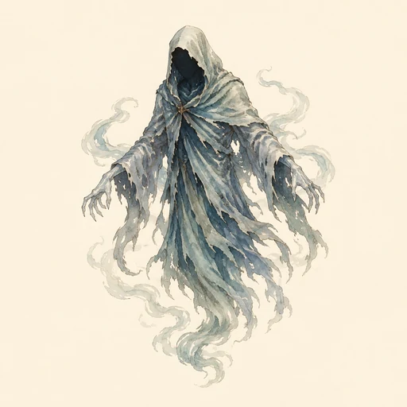
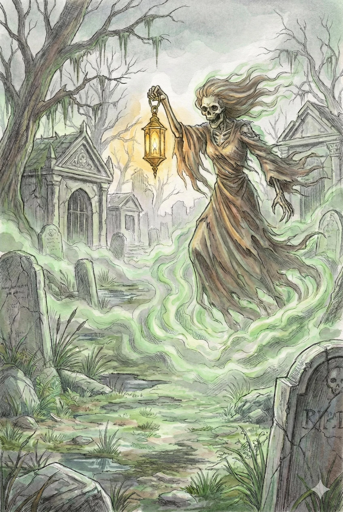
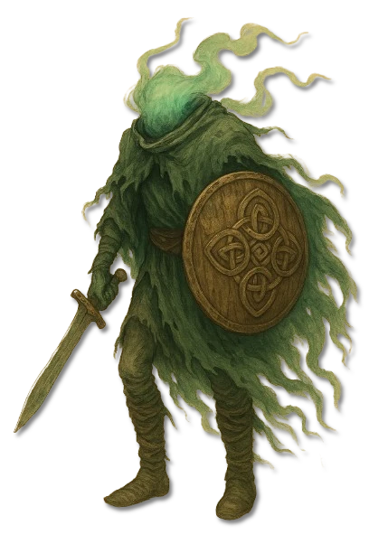
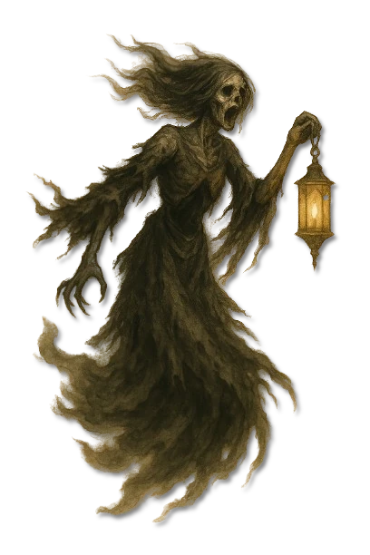
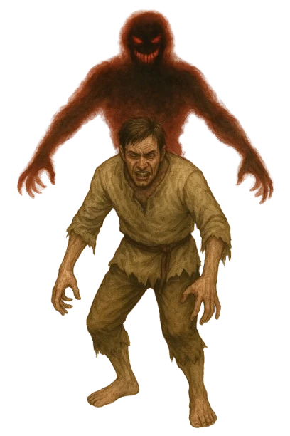
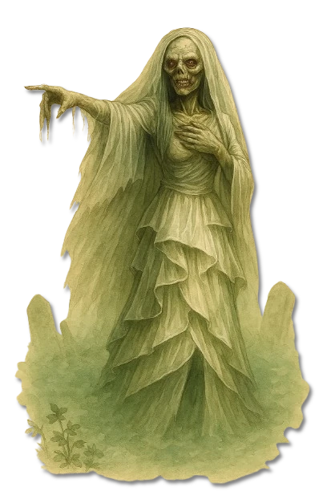
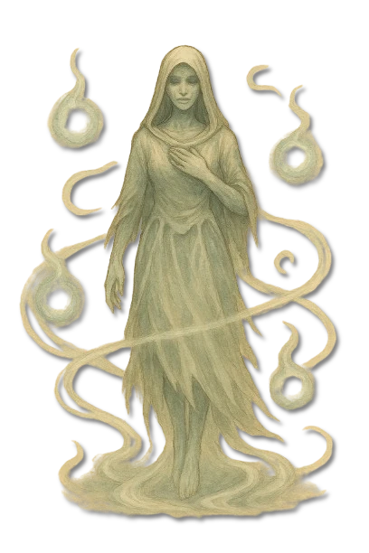
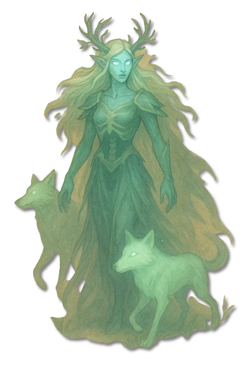

???
???
Noch keine gesicherte Überlieferung.

KreaturenarchivAleria · Orte, Dinge und Schwellen · Archivblatt III / 01
Ruhelose Seelen und Erscheinungen der Zwischenwelt
Geister sind Seelen, Erinnerungen oder gebundene Erscheinungen, die den Übergang aus der Welt der Lebenden nicht vollendet haben. Ihre Gestalt und ihr Verhalten werden von Todesart, Bindung und dem Gefühl geprägt, das sie in der Zwischenwelt festhält.

„Todesfeen heulen und kreischen, und wer sie hört, der weiß, dass er in der nächsten Nacht zu den Toten gehören wird.“Ein albischer Bauer erzählt eine Gruselgeschichte über Banshees
Sechs Merkmale · Skala 1–10
Das Geisterdiagramm bewertet Merkmale ihrer Existenz zwischen den Welten: wie deutlich sie sich zeigen, wie selbstständig sie handeln und wie fest ihre Bindung einer dauerhaften Erlösung widersteht.
Quelle der Einordnung: Aus Stärke der Erscheinung, verbliebenem Willen, persönlicher Bindung und den überlieferten Bannmitteln der Gattung abgeleitet
Überlieferte Erscheinungsformen
Die Archive unterscheiden Geister nach Erscheinung, Bindung und Wirkung. Die noch namenlosen Stellen bleiben als offene Einträge erhalten.

Kopfloser Todesbote
Eine bewaffnete Erscheinung, deren Ankunft häufig als Vorzeichen eines nahenden Todes gedeutet wird.

Gebundener Nachhall
Die verbreitetste Form eines Verstorbenen, die an eine Person, einen Ort oder einen Gegenstand gebunden bleibt.

Traumheimsuchung
Ein nächtlicher Geist, der Schlafende bedrängt und Angst, Atemnot oder trügerische Bilder hervorruft.

Infernale Erscheinung
Eine bösartige Gestalt, bei der Geisterbindung und infernale Einwirkung kaum noch voneinander zu trennen sind.

Ortgebundener Hüter
Ein an eine Stätte oder ein Gut gebundener Geist, der Eindringlinge warnt, prüft oder angreift.

Klagender Todesbote
Ihr durchdringender Klageruf gilt in vielen Erzählungen als Ankündigung von Tod und Verlust.

Lockende Lichter und Rachegeist
Gebundene Seelen führen Reisende mit falschem Licht in das Territorium ihrer rachsüchtigen Mutter.

Ahngeist der Wildnis
Ein alter, mit Landschaft und Erinnerung verwobener Geist, der selten ohne Grund in die Welt der Lebenden eingreift.
???
Noch keine gesicherte Überlieferung.
???
Noch keine gesicherte Überlieferung.
???
Noch keine gesicherte Überlieferung.
???
Noch keine gesicherte Überlieferung.
???
Noch keine gesicherte Überlieferung.
???
Noch keine gesicherte Überlieferung.
???
Noch keine gesicherte Überlieferung.
Geister stehen zwischen den Welten. Sie sind weder vollständig lebendig noch endgültig tot, sondern ein Nachhall dessen, was eine Seele im Leben geprägt hat. Manche zeigen kaum mehr als Licht, Kälte oder eine wiederkehrende Bewegung; andere sprechen, erinnern und handeln mit erschreckender Klarheit.
Die meisten Seelen gehen nach dem Tod in eine göttliche oder infernale Sphäre über. Geister verbleiben in einer Zwischenwelt, die sich stellenweise mit Aleria überschneidet und ihnen erlaubt, unter bestimmten Bedingungen sichtbar oder wirksam zu werden.
Kein Geist gleicht vollkommen einem anderen. Erinnerung, Wille und Erscheinung können klar erhalten sein oder nur noch aus einzelnen Gefühlen und Gewohnheiten bestehen. Darum ist die Frage nach der Geschichte eines Geistes meist wichtiger als die bloße Bestimmung seiner Gestalt.
Gelehrte unterscheiden zwischen selbstbewussten Seelen, ortgebundenem Nachhall und Erscheinungen, die durch Magie geformt wurden. Die Grenzen bleiben unscharf, da ein lange gebundener Geist seine ursprüngliche Persönlichkeit verlieren kann.
Die Ursache bestimmt gewöhnlich, wann und wie eine Erscheinung zurückkehrt. Ein Geist kann an eine Stunde, einen Jahrestag, einen Gegenstand oder die Anwesenheit einer bestimmten Person gebunden sein.
Geweihte Magie, Bannungen und Exorzismen können einen Geist vertreiben. Körperliche Erscheinungen lassen sich mit geweihten oder infernal gestärkten Waffen treffen. Solche Mittel lösen die Ursache jedoch häufig nicht und verschaffen lediglich Zeit.
Eine dauerhafte Erlösung verlangt meist, die Bindung zu verstehen: ein Unrecht zu sühnen, eine Aufgabe zu vollenden, einen Gegenstand zu lösen oder einen Fluch zu brechen. Priester, Kleriker, Hexen und erfahrene Magier verbinden deshalb Schutz mit Nachforschung und, wenn möglich, einem Gespräch.
Kälte, flackernde Flammen, eine unerklärliche Beobachtung oder ein Schatten ohne Körper gehen vielen Sichtungen voraus. Erscheinungen sammeln sich an Häusern, Schlachtfeldern, Friedhöfen, Unfallstätten und Gegenständen, die ihre Geschichte bewahren.
Manche Geister wiederholen nur einen Augenblick, andere verteidigen ihr Gebiet oder suchen gezielt Lebende auf. Nicht jeder kann sie wahrnehmen; Seher, Priester und Hexen erkennen oft Spuren, die anderen verborgen bleiben.